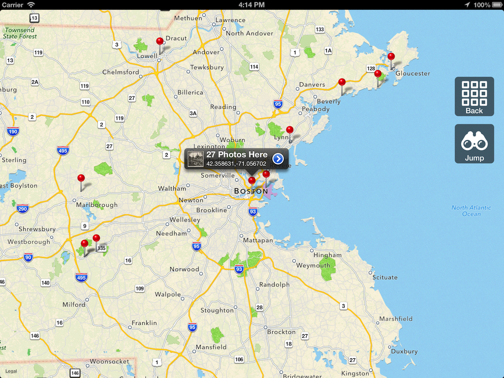

Openpics
An open source iOS application for viewing images from multiple remote sources.
This project is maintained by pj4533
OpenPics
An open source iOS application for viewing images from multiple remote sources. Get it on the app store.


Goals
- Always use the latest iOS technology. (Target only latest OS version)
- Keep all image source knowledge inside corresponding 'Provider' class
- Make it flippin sweet with awesome animations and stuff.
Providers
Each remote image source gets a OPProvider class. Providers can be easily added provided they conform to the OPProvider base class. Currently supported providers:
- Library of Congress (http://www.loc.gov/pictures/api)
- New York Public Library (http://api.repo.nypl.org)
- California Digital Library - XTF (http://www.cdlib.org/services/publishing/tools/xtf/)
- Digital Public Library of America (https://github.com/dpla/platform)
- Europeana (http://www.europeana.eu/portal/api-introduction.html)
For APIs like NYPL, which require a token, it should go into the file OPProviderTokens.h as a define. For example:
#define kOPPROVIDERTOKEN_NYPL @"<your token here>"
This header file is in the .gitignore, so as to not add tokens to the GitHub repository. So either only use non-token providers (like Library of Congress), or create the above file in your local repository. If anyone has a better way of managing this, I am all ears!
Sharing
Sharing (Tumblr, Twitter & Facebook) uses UIActivitys from iOS6. The Twitter and Facebook are the built in implementations, however the Tumblr is custom. The tokens for Tumblr are handled the same way as Providers above. The tokens go in the OPActivityTokens.h file as a define. I have ifdef'd out that stuff, so you should still be able to run without Tumblr tokens. (Tumblr just won't show up as a Activity choice)
Dependencies
- AFNetworking
- CocoaPods
- Heavy use of UICollectionView (currently using unmodified UICollectionViewFlowLayout)
To do
- Make Default screen
- Support showing more metadata (Date, notes, etc)
- Support showing information about results (current page, total pages)
How To Run
- Clone the repo: git clone git@github.com:pj4533/OpenPics.git
- Init CocoaPods: pod install
- Open OpenPics.xcworkspace
- Run in simulator: CMD-R
- Search for sweet old timey pics.
Contribute
If you wish to contribute, send some pull requests! I'll update the app in the App Store whenever we get awesome pull requests merged in.
Build Status

Contact
PJ Gray
License
OpenPics is available under the GPLv3 license. You can modify it and release it, but its gotta be free.
See the LICENSE file for more info.